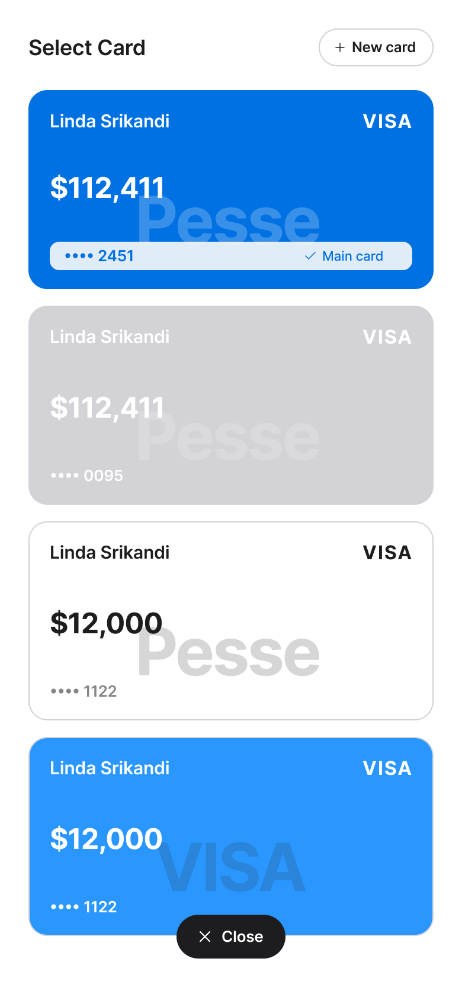
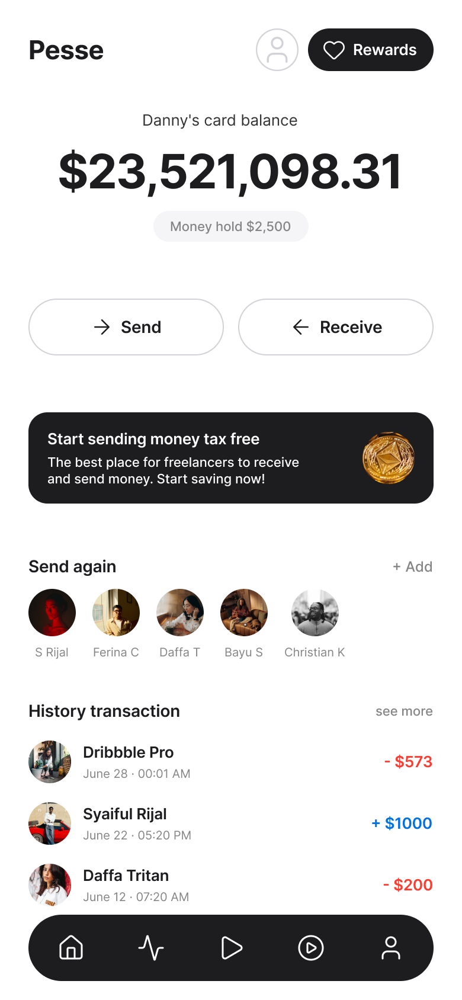
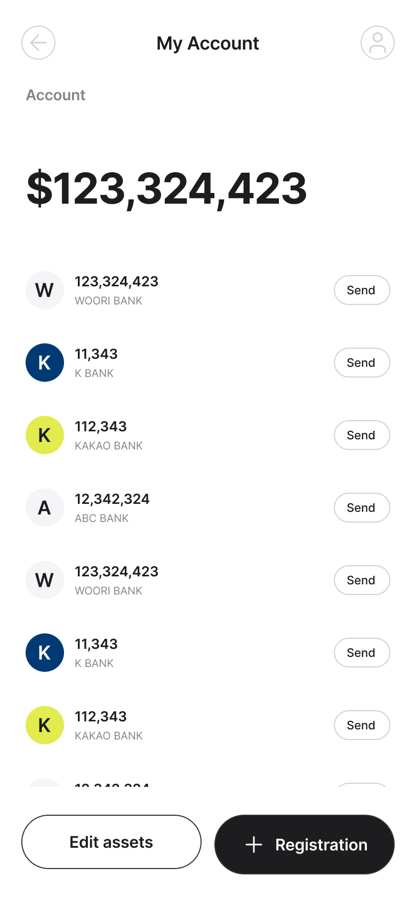
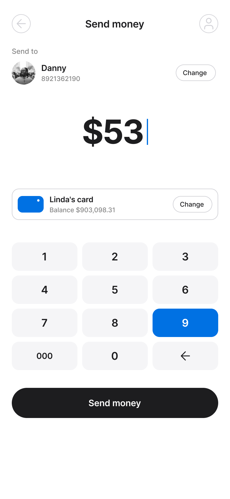
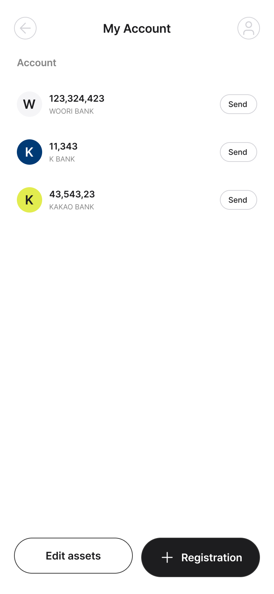

디자이너 결정
변경을 수락하면 GitHub Issue에 designer-approved 라벨을, 거부하면 designer-rejected 라벨을 붙입니다.
Phase A에서는 결정 기록과 viewer/manifest까지 처리합니다. 코드 자동 수정은 다음 Phase B에서 marker 기반으로 제한해 진행합니다.
#1 · 디자이너 검토
Phone · Cards — Select Card 81:388
✏️ 텍스트 변경 🎨 디자인 시스템 미사용 🆕 새 화면 추가
baseline 이미지 미등록 — 추적 시작 직후라 비교할 이전 시점이 없습니다.
다음 baseline-promote 후 cycle부터 비교됩니다.
다음 baseline-promote 후 cycle부터 비교됩니다.

텍스트 변경 5건
- VISAPhone · Cards — Select Card › Cards stack › Card · Linda Srikandi(없음)→VISA
- Linda SrikandiPhone · Cards — Select Card › Cards stack › Card · Linda Srikandi › Frame(없음)→Linda Srikandi
- VISAPhone · Cards — Select Card › Cards stack › Card · Linda Srikandi › Frame(없음)→VISA
- $12,000Phone · Cards — Select Card › Cards stack › Card · Linda Srikandi(없음)→$12,000
- •••• 1122Phone · Cards — Select Card › Cards stack › Card · Linda Srikandi › Frame(없음)→•••• 1122
- Key
auto_phone_cards_select_card_81_388- 코드 경로
src/screens/FigmaFrameTracking.ts- 감지 이유
- 텍스트 변경 — VISA: (없음) → "VISA"
- 텍스트 변경 — Linda Srikandi: (없음) → "Linda Srikandi"
- 텍스트 변경 — VISA: (없음) → "VISA"
- 텍스트 변경 — $12,000: (없음) → "$12,000"
- 텍스트 변경 — •••• 1122: (없음) → "•••• 1122"
- 26 new detached style(s)
- 4 new descendant frame(s)
- 처리 결정
- 매핑의 apply 모드가 report-only로 설정되어 있어 자동 코드 반영 대상이 아닙니다
- Phase 5 자동 반영 엔진(M1-M3)으로는 처리할 수 없는 분류라 수동 처리가 필요합니다: detached-style, new-frame
- 이 매핑의 allowedClasses에 포함되지 않은 분류라 자동 반영이 차단됩니다: detached-style, new-frame
#2 · 디자이너 검토
Phone · Home — Balance 81:302
✏️ 텍스트 변경
baseline 이미지 미등록 — 추적 시작 직후라 비교할 이전 시점이 없습니다.
다음 baseline-promote 후 cycle부터 비교됩니다.
다음 baseline-promote 후 cycle부터 비교됩니다.

텍스트 변경 2건
- Danny's card balancePhone · Home — Balance › Balance › balanceLabelLinda's card balance→Danny's card balance
- $23,521,098.31Phone · Home — Balance › Balance$521,098.31→$23,521,098.31
- Key
auto_phone_home_balance_81_302- 코드 경로
src/screens/FigmaFrameTracking.ts- 감지 이유
- 텍스트 변경 — Danny's card balance: "Linda's card balance" → "Danny's card balance"
- 텍스트 변경 — $23,521,098.31: "$521,098.31" → "$23,521,098.31"
- 처리 결정
- 매핑의 apply 모드가 report-only로 설정되어 있어 자동 코드 반영 대상이 아닙니다
#3 · 디자이너 검토
Phone · My Account 81:494
✏️ 텍스트 변경
baseline 이미지 미등록 — 추적 시작 직후라 비교할 이전 시점이 없습니다.
다음 baseline-promote 후 cycle부터 비교됩니다.
다음 baseline-promote 후 cycle부터 비교됩니다.

텍스트 변경 1건
- $123,324,423Phone · My Account › History › Frame 14123,324,423→$123,324,423
- Key
auto_phone_my_account_81_494- 코드 경로
src/screens/FigmaFrameTracking.ts- 감지 이유
- 텍스트 변경 — $123,324,423: "123,324,423" → "$123,324,423"
- 처리 결정
- 매핑의 apply 모드가 report-only로 설정되어 있어 자동 코드 반영 대상이 아닙니다
#4 · 디자이너 검토
Phone · Send Money 81:429
✏️ 텍스트 변경
baseline 이미지 미등록 — 추적 시작 직후라 비교할 이전 시점이 없습니다.
다음 baseline-promote 후 cycle부터 비교됩니다.
다음 baseline-promote 후 cycle부터 비교됩니다.

텍스트 변경 2건
- DannyPhone · Send Money › recipient wrap › Frame › Frame 3 › Frame 2 › Frame 1Syaiful Rijal→Danny
- $53Phone · Send Money › Frame$19→$53
- Key
auto_phone_send_money_81_429- 코드 경로
src/screens/FigmaFrameTracking.ts- 감지 이유
- 텍스트 변경 — Danny: "Syaiful Rijal" → "Danny"
- 텍스트 변경 — $53: "$19" → "$53"
- 처리 결정
- 매핑의 apply 모드가 report-only로 설정되어 있어 자동 코드 반영 대상이 아닙니다
#5 · 디자이너 검토
test1 35:244
✏️ 텍스트 변경 🎨 디자인 시스템 미사용 🆕 새 화면 추가
baseline 이미지 미등록 — 추적 시작 직후라 비교할 이전 시점이 없습니다.
다음 baseline-promote 후 cycle부터 비교됩니다.
다음 baseline-promote 후 cycle부터 비교됩니다.

텍스트 변경 4건
- Sendtest1 › History › Frame › Frame(없음)→Send
- Ktest1 › History › Frame › Frame › Frame(없음)→K
- 43,543,23test1 › History › Frame › Frame › Frame(없음)→43,543,23
- KAKAO BANKtest1 › History › Frame › Frame › Frame(없음)→KAKAO BANK
- Key
auto_test1_35_244- 코드 경로
src/screens/FigmaFrameTracking.ts- 감지 이유
- 텍스트 변경 — Send: (없음) → "Send"
- 텍스트 변경 — K: (없음) → "K"
- 텍스트 변경 — 43,543,23: (없음) → "43,543,23"
- 텍스트 변경 — KAKAO BANK: (없음) → "KAKAO BANK"
- 21 new detached style(s)
- 5 new descendant frame(s)
- 처리 결정
- 매핑의 apply 모드가 report-only로 설정되어 있어 자동 코드 반영 대상이 아닙니다
- Phase 5 자동 반영 엔진(M1-M3)으로는 처리할 수 없는 분류라 수동 처리가 필요합니다: detached-style, new-frame
- 이 매핑의 allowedClasses에 포함되지 않은 분류라 자동 반영이 차단됩니다: detached-style, new-frame